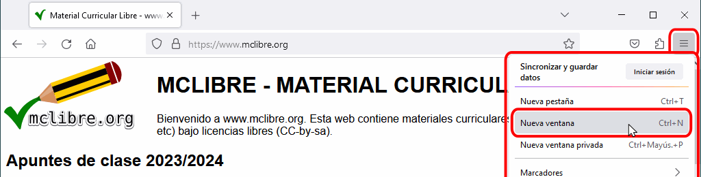
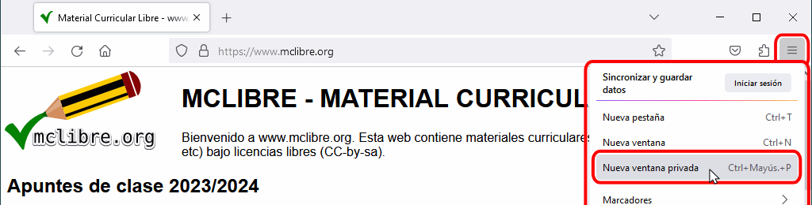

Los atajos de teclado permiten acceder más rápidamente a funciones y elementos del interfaz. En muchos casos, esos atajos son comunes a varios navegadores (Firefox, Google Chrome, Internet Explorer, etc.). Algunas páginas web desactivan los atajos de teclado.
Listado oficial de atajos de teclado: https://support.mozilla.org/es/kb/accesos-directos-realiza-rapidamente-tareas-comune
| Navegación | |
|---|---|
| Ctrl+0 | Establecer zoom al 100% |
| Ctrl++ | Aumentar el zoom |
| Ctrl+- | Reducir el zoom |
| F5, Ctrl+r | Actualizar la página actual |
| Ctrl+F5 | Actualizar la página actual (ignorando la caché) |
| F11 | Pantalla completa |
| Alt+Inicio | Abrir la página de inicio |
| Retroceso, Alt+← | Retroceder a la anterior página visitada |
| Mayús+Retroceso, Alt+→ | Avanzar a la siguiente página visitada |
| Pestañas | |
| Ctrl+t | Abrir una nueva pestaña |
| Ctrl+w, Ctrl+F4 | Cerrar la pestaña actual |
| Ctrl+Mayús+t | Reabrir la última pestaña cerrada |
| Ctrl+AvPág, Ctrl+Tab | Ir a la pestaña siguiente |
| Ctrl+RePág, Ctrl+Mayús+Tab | ir a la pestaña anterior |
| Ctrl+1, Ctrl+2, .., Ctrl+8 | Ir a la primera, segunda, .., octava pestaña |
| Ctrl+9 | Ir a la última pestaña |
| Ventanas | |
| Ctrl+n | Abrir una nueva ventana |
| Ctrl+Mayús+p | Abrir una nueva ventana de incógnito |
| Ctrl+Mayús+w, Alt+F4 | Cerrar la ventana actual |
| Accesorios | |
| Ctrl+l | Ir a la barra de dirección |
| Ctrl+k, Ctrl+e | Ir a la barra de buscadores |
| Ctrl+j | Abrir la ventana de descargas |
| Ctrl+f | Abrir la barra de búsqueda |
| Ctrl+b, Ctrl+i | Abrir / Cerrar el panel lateral de marcadores |
| Ctrl+h | Abrir / Cerrar el panel lateral de historial |
| Ctrl+u | Abrir la ventana de código fuente |
| Ctrl+d | Crear un marcador para la página actual |
| Ctrl+Mayús+d | Crear marcadores para todas las páginas actuales |
| Ctrl+Mayús+Supr | Borrar el historial reciente |
Se puede abrir una nueva ventana:

Las ventanas privadas (también llamadas ventanas de incógnito) no conservan ningún rastro de las páginas visitadas. Se puede abrir una nueva ventana privada:

Se puede cerrar una ventana: